Exercise 93： Let EDBC be a parallelogram. F is the midpoint of ED and GB. DB=AE. Prove that GA⊥AC.
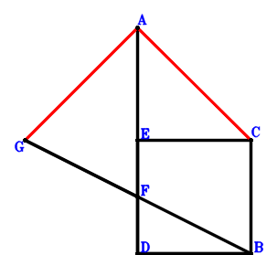
\(\because \) EDBC is a parallelogram \(\therefore \small\overrightarrow{DE}=- \small\overrightarrow{DB} + \small\overrightarrow{DC}\).\(\because \) F is the midpoint of ED \(\therefore \small\overrightarrow{DF}=\dfrac{\small\overrightarrow{DE}}{2}=- \dfrac{\small\overrightarrow{DB}}{2} + \dfrac{\small\overrightarrow{DC}}{2}\).\(\because \) F is the midpoint of GB \(\therefore \small\overrightarrow{DG}=- \small\overrightarrow{DB} + 2 \small\overrightarrow{DF}=- 2 \small\overrightarrow{DB} + \small\overrightarrow{DC}\).\(\because \) DB=AE \( \therefore\small\overrightarrow{DB}^{2} - \small\overrightarrow{EA}^{2}=\small\overrightarrow{DB}^{2} - \left(\small\overrightarrow{DA} - \small\overrightarrow{DE}\right)^{2}=\small\overrightarrow{DB}^{2} - \left(\small\overrightarrow{DA} + \small\overrightarrow{DB} - \small\overrightarrow{DC}\right)^{2}=- \small\overrightarrow{DA}^{2} - 2 \small\overrightarrow{DA} \cdot \small\overrightarrow{DB} + 2 \small\overrightarrow{DA} \cdot \small\overrightarrow{DC} + 2 \small\overrightarrow{DB} \cdot \small\overrightarrow{DC} - \small\overrightarrow{DC}^{2}=0.\)In conclusion, \(\small\overrightarrow{CA} \cdot \small\overrightarrow{GA}=\left(\small\overrightarrow{DA} - \small\overrightarrow{DC}\right) \cdot \left(\small\overrightarrow{DA} - \small\overrightarrow{DG}\right)=\left(\small\overrightarrow{DA} - \small\overrightarrow{DC}\right) \cdot \left(\small\overrightarrow{DA} + 2 \small\overrightarrow{DB} - \small\overrightarrow{DC}\right)=\small\overrightarrow{DA}^{2} + 2 \small\overrightarrow{DA} \cdot \small\overrightarrow{DB} - 2 \small\overrightarrow{DA} \cdot \small\overrightarrow{DC} - 2 \small\overrightarrow{DB} \cdot \small\overrightarrow{DC} + \small\overrightarrow{DC}^{2}=0\), that is, GA⊥AC.
Exercise 218： Let ECAD be a parallelogram. B is the midpoint of GD. F is the midpoint of HG and CD. BD=EB. Prove that CA⊥AH.
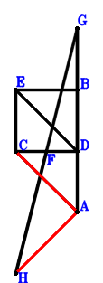
\(\because \) ECAD is a parallelogram \(\therefore \small\overrightarrow{DE}=- \small\overrightarrow{DA} + \small\overrightarrow{DC}\).\(\because \) F is the midpoint of CD \(\therefore \small\overrightarrow{DF}=\dfrac{\small\overrightarrow{DC}}{2}\).\(\because \) B is the midpoint of GD \(\therefore \small\overrightarrow{DG}=2 \small\overrightarrow{DB}\).\(\because \) F is the midpoint of HG \(\therefore \small\overrightarrow{DH}=\small\overrightarrow{DC} - \small\overrightarrow{DG}=- 2 \small\overrightarrow{DB} + \small\overrightarrow{DC}\).\(\because \) BD=EB \( \therefore\small\overrightarrow{DB}^{2} - \small\overrightarrow{EB}^{2}=\small\overrightarrow{DB}^{2} - \left(\small\overrightarrow{DB} - \small\overrightarrow{DE}\right)^{2}=\small\overrightarrow{DB}^{2} - \left(\small\overrightarrow{DA} + \small\overrightarrow{DB} - \small\overrightarrow{DC}\right)^{2}=- \small\overrightarrow{DA}^{2} - 2 \small\overrightarrow{DA} \cdot \small\overrightarrow{DB} + 2 \small\overrightarrow{DA} \cdot \small\overrightarrow{DC} + 2 \small\overrightarrow{DB} \cdot \small\overrightarrow{DC} - \small\overrightarrow{DC}^{2}=0.\)In conclusion, \(\small\overrightarrow{CA} \cdot \small\overrightarrow{HA}=\left(\small\overrightarrow{DA} - \small\overrightarrow{DC}\right) \cdot \left(\small\overrightarrow{DA} - \small\overrightarrow{DH}\right)=\left(\small\overrightarrow{DA} - \small\overrightarrow{DC}\right) \cdot \left(\small\overrightarrow{DA} + 2 \small\overrightarrow{DB} - \small\overrightarrow{DC}\right)=\small\overrightarrow{DA}^{2} + 2 \small\overrightarrow{DA} \cdot \small\overrightarrow{DB} - 2 \small\overrightarrow{DA} \cdot \small\overrightarrow{DC} - 2 \small\overrightarrow{DB} \cdot \small\overrightarrow{DC} + \small\overrightarrow{DC}^{2}=0\), that is, CA⊥AH.
Exercise 273： Let AEBC be a parallelogram. D, G, H are the midpoints of FB, FC, AB, respectively. DB=ED. Prove that AC⊥GH.
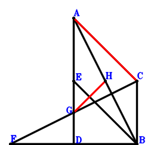
\(\because \) AEBC is a parallelogram \(\therefore \small\overrightarrow{BE}=\small\overrightarrow{BA} - \small\overrightarrow{BC}\).\(\because \) D is the midpoint of FB \(\therefore \small\overrightarrow{BF}=2 \small\overrightarrow{BD}\).\(\because \) G is the midpoint of FC \(\therefore \small\overrightarrow{BG}=\dfrac{\small\overrightarrow{BC}}{2} + \dfrac{\small\overrightarrow{BF}}{2}=\dfrac{\small\overrightarrow{BC}}{2} + \small\overrightarrow{BD}\).\(\because \) H is the midpoint of AB \(\therefore \small\overrightarrow{BH}=\dfrac{\small\overrightarrow{BA}}{2}\).\(\because \) DB=ED \( \therefore\small\overrightarrow{DB}^{2} - \small\overrightarrow{DE}^{2}=\small\overrightarrow{BD}^{2} - \left(- \small\overrightarrow{BD} + \small\overrightarrow{BE}\right)^{2}=\small\overrightarrow{BD}^{2} - \left(\small\overrightarrow{BA} - \small\overrightarrow{BC} - \small\overrightarrow{BD}\right)^{2}=- \small\overrightarrow{BA}^{2} + 2 \small\overrightarrow{BA} \cdot \small\overrightarrow{BC} + 2 \small\overrightarrow{BA} \cdot \small\overrightarrow{BD} - \small\overrightarrow{BC}^{2} - 2 \small\overrightarrow{BC} \cdot \small\overrightarrow{BD}=0.\)In conclusion, \(\small\overrightarrow{CA} \cdot \small\overrightarrow{GH}=\left(\small\overrightarrow{BA} - \small\overrightarrow{BC}\right) \cdot \left(- \small\overrightarrow{BG} + \small\overrightarrow{BH}\right)=\left(\small\overrightarrow{BA} - \small\overrightarrow{BC}\right) \cdot \left(\dfrac{\small\overrightarrow{BA}}{2} - \dfrac{\small\overrightarrow{BC}}{2} - \small\overrightarrow{BD}\right)=\dfrac{\small\overrightarrow{BA}^{2}}{2} - \small\overrightarrow{BA} \cdot \small\overrightarrow{BC} - \small\overrightarrow{BA} \cdot \small\overrightarrow{BD} + \dfrac{\small\overrightarrow{BC}^{2}}{2} + \small\overrightarrow{BC} \cdot \small\overrightarrow{BD}=0\), that is, AC⊥GH.
Exercise 299： Let GBHA and CBEA be parallelograms. F is the midpoint of BG and CD. BD=DE. Prove that HD⊥CA.
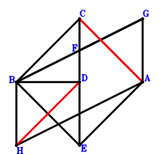
\(\because \) CBEA is a parallelogram \(\therefore \small\overrightarrow{DE}=\small\overrightarrow{DA} + \small\overrightarrow{DB} - \small\overrightarrow{DC}\).\(\because \) F is the midpoint of CD \(\therefore \small\overrightarrow{DF}=\dfrac{\small\overrightarrow{DC}}{2}\).\(\because \) F is the midpoint of BG \(\therefore \small\overrightarrow{DG}=- \small\overrightarrow{DB} + 2 \small\overrightarrow{DF}=- \small\overrightarrow{DB} + \small\overrightarrow{DC}\).\(\because \) GBHA is a parallelogram \(\therefore \small\overrightarrow{DH}=\small\overrightarrow{DA} + \small\overrightarrow{DB} - \small\overrightarrow{DG}=\small\overrightarrow{DA} + 2 \small\overrightarrow{DB} - \small\overrightarrow{DC}\).\(\because \) BD=DE \( \therefore\small\overrightarrow{DB}^{2} - \small\overrightarrow{DE}^{2}=\small\overrightarrow{DB}^{2} - \left(\small\overrightarrow{DA} + \small\overrightarrow{DB} - \small\overrightarrow{DC}\right)^{2}=- \small\overrightarrow{DA}^{2} - 2 \small\overrightarrow{DA} \cdot \small\overrightarrow{DB} + 2 \small\overrightarrow{DA} \cdot \small\overrightarrow{DC} + 2 \small\overrightarrow{DB} \cdot \small\overrightarrow{DC} - \small\overrightarrow{DC}^{2}=0.\)In conclusion, \(\small\overrightarrow{CA} \cdot \small\overrightarrow{DH}=\small\overrightarrow{DH} \cdot \left(\small\overrightarrow{DA} - \small\overrightarrow{DC}\right)=\left(\small\overrightarrow{DA} - \small\overrightarrow{DC}\right) \cdot \left(\small\overrightarrow{DA} + 2 \small\overrightarrow{DB} - \small\overrightarrow{DC}\right)=\small\overrightarrow{DA}^{2} + 2 \small\overrightarrow{DA} \cdot \small\overrightarrow{DB} - 2 \small\overrightarrow{DA} \cdot \small\overrightarrow{DC} - 2 \small\overrightarrow{DB} \cdot \small\overrightarrow{DC} + \small\overrightarrow{DC}^{2}=0\), that is, HD⊥CA.
Exercise 317： Let ACBE be a parallelogram. G, D are the midpoints of CF, AF, respectively. BD=ED. Prove that CA⊥BG.
\(\because \) ACBE is a parallelogram \(\therefore \small\overrightarrow{DE}=\small\overrightarrow{DA} + \small\overrightarrow{DB} - \small\overrightarrow{DC}\).\(\because \) D is the midpoint of AF \(\therefore \small\overrightarrow{DF}=- \small\overrightarrow{DA}\).\(\because \) G is the midpoint of CF \(\therefore \small\overrightarrow{DG}=\dfrac{\small\overrightarrow{DC}}{2} + \dfrac{\small\overrightarrow{DF}}{2}=- \dfrac{\small\overrightarrow{DA}}{2} + \dfrac{\small\overrightarrow{DC}}{2}\).\(\because \) BD=ED \( \therefore\small\overrightarrow{DB}^{2} - \small\overrightarrow{DE}^{2}=\small\overrightarrow{DB}^{2} - \left(\small\overrightarrow{DA} + \small\overrightarrow{DB} - \small\overrightarrow{DC}\right)^{2}=- \small\overrightarrow{DA}^{2} - 2 \small\overrightarrow{DA} \cdot \small\overrightarrow{DB} + 2 \small\overrightarrow{DA} \cdot \small\overrightarrow{DC} + 2 \small\overrightarrow{DB} \cdot \small\overrightarrow{DC} - \small\overrightarrow{DC}^{2}=0.\)In conclusion, \(\small\overrightarrow{CA} \cdot \small\overrightarrow{GB}=\left(\small\overrightarrow{DA} - \small\overrightarrow{DC}\right) \cdot \left(\small\overrightarrow{DB} - \small\overrightarrow{DG}\right)=\left(\small\overrightarrow{DA} - \small\overrightarrow{DC}\right) \cdot \left(\dfrac{\small\overrightarrow{DA}}{2} + \small\overrightarrow{DB} - \dfrac{\small\overrightarrow{DC}}{2}\right)=\dfrac{\small\overrightarrow{DA}^{2}}{2} + \small\overrightarrow{DA} \cdot \small\overrightarrow{DB} - \small\overrightarrow{DA} \cdot \small\overrightarrow{DC} - \small\overrightarrow{DB} \cdot \small\overrightarrow{DC} + \dfrac{\small\overrightarrow{DC}^{2}}{2}=0\), that is, CA⊥BG.
Exercise 349： Let GBDH and CBEA be parallelograms. F is the midpoint of BG and CD. BD=DE. Prove that CA⊥AH.
\(\because \) CBEA is a parallelogram \(\therefore \small\overrightarrow{DE}=\small\overrightarrow{DA} + \small\overrightarrow{DB} - \small\overrightarrow{DC}\).\(\because \) F is the midpoint of CD \(\therefore \small\overrightarrow{DF}=\dfrac{\small\overrightarrow{DC}}{2}\).\(\because \) F is the midpoint of BG \(\therefore \small\overrightarrow{DG}=- \small\overrightarrow{DB} + 2 \small\overrightarrow{DF}=- \small\overrightarrow{DB} + \small\overrightarrow{DC}\).\(\because \) GBDH is a parallelogram \(\therefore \small\overrightarrow{DH}=- 2 \small\overrightarrow{DB} + \small\overrightarrow{DC}\).\(\because \) BD=DE \( \therefore\small\overrightarrow{DB}^{2} - \small\overrightarrow{DE}^{2}=\small\overrightarrow{DB}^{2} - \left(\small\overrightarrow{DA} + \small\overrightarrow{DB} - \small\overrightarrow{DC}\right)^{2}=- \small\overrightarrow{DA}^{2} - 2 \small\overrightarrow{DA} \cdot \small\overrightarrow{DB} + 2 \small\overrightarrow{DA} \cdot \small\overrightarrow{DC} + 2 \small\overrightarrow{DB} \cdot \small\overrightarrow{DC} - \small\overrightarrow{DC}^{2}=0.\)In conclusion, \(\small\overrightarrow{CA} \cdot \small\overrightarrow{HA}=\left(\small\overrightarrow{DA} - \small\overrightarrow{DC}\right) \cdot \left(\small\overrightarrow{DA} - \small\overrightarrow{DH}\right)=\left(\small\overrightarrow{DA} - \small\overrightarrow{DC}\right) \cdot \left(\small\overrightarrow{DA} + 2 \small\overrightarrow{DB} - \small\overrightarrow{DC}\right)=\small\overrightarrow{DA}^{2} + 2 \small\overrightarrow{DA} \cdot \small\overrightarrow{DB} - 2 \small\overrightarrow{DA} \cdot \small\overrightarrow{DC} - 2 \small\overrightarrow{DB} \cdot \small\overrightarrow{DC} + \small\overrightarrow{DC}^{2}=0\), that is, CA⊥AH.
Exercise 393： Let ADBE be a parallelogram. GDBF is a trapezoid with DB//GF and DB=2GF. F, G are the midpoints of CD, AH, respectively. DB=EC. Prove that AC⊥HB.
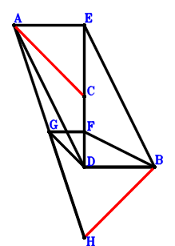
\(\because \) ADBE is a parallelogram \(\therefore \small\overrightarrow{DE}=\small\overrightarrow{DA} + \small\overrightarrow{DB}\).\(\because \) F is the midpoint of CD \(\therefore \small\overrightarrow{DF}=\dfrac{\small\overrightarrow{DC}}{2}\).\(\because \) DB//GF and DB=2GF \(\therefore \small\overrightarrow{DG}=- \dfrac{\small\overrightarrow{DB}}{2} + \dfrac{\small\overrightarrow{DC}}{2}\).\(\because \) G is the midpoint of AH \(\therefore \small\overrightarrow{DH}=- \small\overrightarrow{DA} + 2 \small\overrightarrow{DG}=- \small\overrightarrow{DA} - \small\overrightarrow{DB} + \small\overrightarrow{DC}\).\(\because \) DB=EC \( \therefore- \small\overrightarrow{CE}^{2} + \small\overrightarrow{DB}^{2}=\small\overrightarrow{DB}^{2} - \left(- \small\overrightarrow{DC} + \small\overrightarrow{DE}\right)^{2}=\small\overrightarrow{DB}^{2} - \left(\small\overrightarrow{DA} + \small\overrightarrow{DB} - \small\overrightarrow{DC}\right)^{2}=- \small\overrightarrow{DA}^{2} - 2 \small\overrightarrow{DA} \cdot \small\overrightarrow{DB} + 2 \small\overrightarrow{DA} \cdot \small\overrightarrow{DC} + 2 \small\overrightarrow{DB} \cdot \small\overrightarrow{DC} - \small\overrightarrow{DC}^{2}=0.\)In conclusion, \(\small\overrightarrow{CA} \cdot \small\overrightarrow{HB}=\left(\small\overrightarrow{DA} - \small\overrightarrow{DC}\right) \cdot \left(\small\overrightarrow{DB} - \small\overrightarrow{DH}\right)=\left(\small\overrightarrow{DA} - \small\overrightarrow{DC}\right) \cdot \left(\small\overrightarrow{DA} + 2 \small\overrightarrow{DB} - \small\overrightarrow{DC}\right)=\small\overrightarrow{DA}^{2} + 2 \small\overrightarrow{DA} \cdot \small\overrightarrow{DB} - 2 \small\overrightarrow{DA} \cdot \small\overrightarrow{DC} - 2 \small\overrightarrow{DB} \cdot \small\overrightarrow{DC} + \small\overrightarrow{DC}^{2}=0\), that is, AC⊥HB.
Exercise 398： Let EBDA be a parallelogram. F is the midpoint of CD and EG. BD=EC. Prove that CA⊥BG.
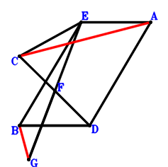
\(\because \) EBDA is a parallelogram \(\therefore \small\overrightarrow{DE}=\small\overrightarrow{DA} + \small\overrightarrow{DB}\).\(\because \) F is the midpoint of CD \(\therefore \small\overrightarrow{DF}=\dfrac{\small\overrightarrow{DC}}{2}\).\(\because \) F is the midpoint of EG \(\therefore \small\overrightarrow{DG}=\small\overrightarrow{DC} - \small\overrightarrow{DE}=- \small\overrightarrow{DA} - \small\overrightarrow{DB} + \small\overrightarrow{DC}\).\(\because \) BD=EC \( \therefore- \small\overrightarrow{CE}^{2} + \small\overrightarrow{DB}^{2}=\small\overrightarrow{DB}^{2} - \left(- \small\overrightarrow{DC} + \small\overrightarrow{DE}\right)^{2}=\small\overrightarrow{DB}^{2} - \left(\small\overrightarrow{DA} + \small\overrightarrow{DB} - \small\overrightarrow{DC}\right)^{2}=- \small\overrightarrow{DA}^{2} - 2 \small\overrightarrow{DA} \cdot \small\overrightarrow{DB} + 2 \small\overrightarrow{DA} \cdot \small\overrightarrow{DC} + 2 \small\overrightarrow{DB} \cdot \small\overrightarrow{DC} - \small\overrightarrow{DC}^{2}=0.\)In conclusion, \(\small\overrightarrow{CA} \cdot \small\overrightarrow{GB}=\left(\small\overrightarrow{DA} - \small\overrightarrow{DC}\right) \cdot \left(\small\overrightarrow{DB} - \small\overrightarrow{DG}\right)=\left(\small\overrightarrow{DA} - \small\overrightarrow{DC}\right) \cdot \left(\small\overrightarrow{DA} + 2 \small\overrightarrow{DB} - \small\overrightarrow{DC}\right)=\small\overrightarrow{DA}^{2} + 2 \small\overrightarrow{DA} \cdot \small\overrightarrow{DB} - 2 \small\overrightarrow{DA} \cdot \small\overrightarrow{DC} - 2 \small\overrightarrow{DB} \cdot \small\overrightarrow{DC} + \small\overrightarrow{DC}^{2}=0\), that is, CA⊥BG.
Exercise 474： Let CGDB be a trapezoid with CB//GD and CB=2GD. E, F, G are the midpoints of DC, AB, AH, respectively. DB=2FE. Prove that AC⊥HB.
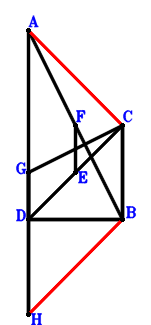
\(\because \) E is the midpoint of DC \(\therefore \small\overrightarrow{BE}=\dfrac{\small\overrightarrow{BC}}{2} + \dfrac{\small\overrightarrow{BD}}{2}\).\(\because \) F is the midpoint of AB \(\therefore \small\overrightarrow{BF}=\dfrac{\small\overrightarrow{BA}}{2}\).\(\because \) CB//GD and CB=2GD \(\therefore \small\overrightarrow{BG}=\dfrac{\small\overrightarrow{BC}}{2} + \small\overrightarrow{BD}\).\(\because \) G is the midpoint of AH \(\therefore \small\overrightarrow{BH}=- \small\overrightarrow{BA} + 2 \small\overrightarrow{BG}=- \small\overrightarrow{BA} + \small\overrightarrow{BC} + 2 \small\overrightarrow{BD}\).\(\because \) DB=2FE \( \therefore\small\overrightarrow{DB}^{2} - 4 \small\overrightarrow{EF}^{2}=\small\overrightarrow{BD}^{2} - 4 \left(- \small\overrightarrow{BE} + \small\overrightarrow{BF}\right)^{2}=\small\overrightarrow{BD}^{2} - 4 \left(\dfrac{\small\overrightarrow{BA}}{2} - \dfrac{\small\overrightarrow{BC}}{2} - \dfrac{\small\overrightarrow{BD}}{2}\right)^{2}=- \small\overrightarrow{BA}^{2} + 2 \small\overrightarrow{BA} \cdot \small\overrightarrow{BC} + 2 \small\overrightarrow{BA} \cdot \small\overrightarrow{BD} - \small\overrightarrow{BC}^{2} - 2 \small\overrightarrow{BC} \cdot \small\overrightarrow{BD}=0.\)In conclusion, \(\small\overrightarrow{CA} \cdot \small\overrightarrow{HB}=- \small\overrightarrow{BH} \cdot \left(\small\overrightarrow{BA} - \small\overrightarrow{BC}\right)=- \left(\small\overrightarrow{BA} - \small\overrightarrow{BC}\right) \cdot \left(- \small\overrightarrow{BA} + \small\overrightarrow{BC} + 2 \small\overrightarrow{BD}\right)=\small\overrightarrow{BA}^{2} - 2 \small\overrightarrow{BA} \cdot \small\overrightarrow{BC} - 2 \small\overrightarrow{BA} \cdot \small\overrightarrow{BD} + \small\overrightarrow{BC}^{2} + 2 \small\overrightarrow{BC} \cdot \small\overrightarrow{BD}=0\), that is, AC⊥HB.
Exercise 486： Let F, H be the midpoints of AB, GD, respectively. E is the midpoint of CD and GB. DB=2FE. Prove that AC⊥HF.
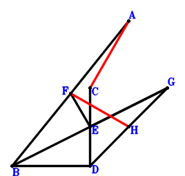
\(\because \) E is the midpoint of CD \(\therefore \small\overrightarrow{DE}=\dfrac{\small\overrightarrow{DC}}{2}\).\(\because \) F is the midpoint of AB \(\therefore \small\overrightarrow{DF}=\dfrac{\small\overrightarrow{DA}}{2} + \dfrac{\small\overrightarrow{DB}}{2}\).\(\because \) E is the midpoint of GB \(\therefore \small\overrightarrow{DG}=- \small\overrightarrow{DB} + 2 \small\overrightarrow{DE}=- \small\overrightarrow{DB} + \small\overrightarrow{DC}\).\(\because \) H is the midpoint of GD \(\therefore \small\overrightarrow{DH}=\dfrac{\small\overrightarrow{DG}}{2}=- \dfrac{\small\overrightarrow{DB}}{2} + \dfrac{\small\overrightarrow{DC}}{2}\).\(\because \) DB=2FE \( \therefore\small\overrightarrow{DB}^{2} - 4 \small\overrightarrow{EF}^{2}=\small\overrightarrow{DB}^{2} - 4 \left(- \small\overrightarrow{DE} + \small\overrightarrow{DF}\right)^{2}=\small\overrightarrow{DB}^{2} - 4 \left(\dfrac{\small\overrightarrow{DA}}{2} + \dfrac{\small\overrightarrow{DB}}{2} - \dfrac{\small\overrightarrow{DC}}{2}\right)^{2}=- \small\overrightarrow{DA}^{2} - 2 \small\overrightarrow{DA} \cdot \small\overrightarrow{DB} + 2 \small\overrightarrow{DA} \cdot \small\overrightarrow{DC} + 2 \small\overrightarrow{DB} \cdot \small\overrightarrow{DC} - \small\overrightarrow{DC}^{2}=0.\)In conclusion, \(\small\overrightarrow{CA} \cdot \small\overrightarrow{HF}=\left(\small\overrightarrow{DA} - \small\overrightarrow{DC}\right) \cdot \left(\small\overrightarrow{DF} - \small\overrightarrow{DH}\right)=\left(\small\overrightarrow{DA} - \small\overrightarrow{DC}\right) \cdot \left(\dfrac{\small\overrightarrow{DA}}{2} + \small\overrightarrow{DB} - \dfrac{\small\overrightarrow{DC}}{2}\right)=\dfrac{\small\overrightarrow{DA}^{2}}{2} + \small\overrightarrow{DA} \cdot \small\overrightarrow{DB} - \small\overrightarrow{DA} \cdot \small\overrightarrow{DC} - \small\overrightarrow{DB} \cdot \small\overrightarrow{DC} + \dfrac{\small\overrightarrow{DC}^{2}}{2}=0\), that is, AC⊥HF.
Exercise 515： Let GBDA be a parallelogram. F is the midpoint of BA. E is the midpoint of GH and CD. BD=2FE. Prove that CA⊥BH.
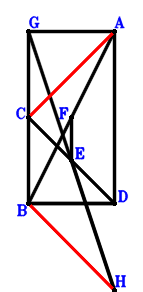
\(\because \) E is the midpoint of CD \(\therefore \small\overrightarrow{DE}=\dfrac{\small\overrightarrow{DC}}{2}\).\(\because \) F is the midpoint of BA \(\therefore \small\overrightarrow{DF}=\dfrac{\small\overrightarrow{DA}}{2} + \dfrac{\small\overrightarrow{DB}}{2}\).\(\because \) GBDA is a parallelogram \(\therefore \small\overrightarrow{DG}=\small\overrightarrow{DA} + \small\overrightarrow{DB}\).\(\because \) E is the midpoint of GH \(\therefore \small\overrightarrow{DH}=\small\overrightarrow{DC} - \small\overrightarrow{DG}=- \small\overrightarrow{DA} - \small\overrightarrow{DB} + \small\overrightarrow{DC}\).\(\because \) BD=2FE \( \therefore\small\overrightarrow{DB}^{2} - 4 \small\overrightarrow{EF}^{2}=\small\overrightarrow{DB}^{2} - 4 \left(- \small\overrightarrow{DE} + \small\overrightarrow{DF}\right)^{2}=\small\overrightarrow{DB}^{2} - 4 \left(\dfrac{\small\overrightarrow{DA}}{2} + \dfrac{\small\overrightarrow{DB}}{2} - \dfrac{\small\overrightarrow{DC}}{2}\right)^{2}=- \small\overrightarrow{DA}^{2} - 2 \small\overrightarrow{DA} \cdot \small\overrightarrow{DB} + 2 \small\overrightarrow{DA} \cdot \small\overrightarrow{DC} + 2 \small\overrightarrow{DB} \cdot \small\overrightarrow{DC} - \small\overrightarrow{DC}^{2}=0.\)In conclusion, \(\small\overrightarrow{CA} \cdot \small\overrightarrow{HB}=\left(\small\overrightarrow{DA} - \small\overrightarrow{DC}\right) \cdot \left(\small\overrightarrow{DB} - \small\overrightarrow{DH}\right)=\left(\small\overrightarrow{DA} - \small\overrightarrow{DC}\right) \cdot \left(\small\overrightarrow{DA} + 2 \small\overrightarrow{DB} - \small\overrightarrow{DC}\right)=\small\overrightarrow{DA}^{2} + 2 \small\overrightarrow{DA} \cdot \small\overrightarrow{DB} - 2 \small\overrightarrow{DA} \cdot \small\overrightarrow{DC} - 2 \small\overrightarrow{DB} \cdot \small\overrightarrow{DC} + \small\overrightarrow{DC}^{2}=0\), that is, CA⊥BH.
Exercise 518： Let ACGD be a parallelogram. B, E, F are the midpoints of HD, CD, BA, respectively. BD=2FE. Prove that HG⊥CA.
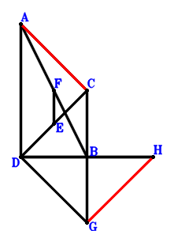
\(\because \) E is the midpoint of CD \(\therefore \small\overrightarrow{DE}=\dfrac{\small\overrightarrow{DC}}{2}\).\(\because \) F is the midpoint of BA \(\therefore \small\overrightarrow{DF}=\dfrac{\small\overrightarrow{DA}}{2} + \dfrac{\small\overrightarrow{DB}}{2}\).\(\because \) ACGD is a parallelogram \(\therefore \small\overrightarrow{DG}=- \small\overrightarrow{DA} + \small\overrightarrow{DC}\).\(\because \) B is the midpoint of HD \(\therefore \small\overrightarrow{DH}=2 \small\overrightarrow{DB}\).\(\because \) BD=2FE \( \therefore\small\overrightarrow{DB}^{2} - 4 \small\overrightarrow{EF}^{2}=\small\overrightarrow{DB}^{2} - 4 \left(- \small\overrightarrow{DE} + \small\overrightarrow{DF}\right)^{2}=\small\overrightarrow{DB}^{2} - 4 \left(\dfrac{\small\overrightarrow{DA}}{2} + \dfrac{\small\overrightarrow{DB}}{2} - \dfrac{\small\overrightarrow{DC}}{2}\right)^{2}=- \small\overrightarrow{DA}^{2} - 2 \small\overrightarrow{DA} \cdot \small\overrightarrow{DB} + 2 \small\overrightarrow{DA} \cdot \small\overrightarrow{DC} + 2 \small\overrightarrow{DB} \cdot \small\overrightarrow{DC} - \small\overrightarrow{DC}^{2}=0.\)In conclusion, \(\small\overrightarrow{CA} \cdot \small\overrightarrow{GH}=\left(\small\overrightarrow{DA} - \small\overrightarrow{DC}\right) \cdot \left(- \small\overrightarrow{DG} + \small\overrightarrow{DH}\right)=\left(\small\overrightarrow{DA} - \small\overrightarrow{DC}\right) \cdot \left(\small\overrightarrow{DA} + 2 \small\overrightarrow{DB} - \small\overrightarrow{DC}\right)=\small\overrightarrow{DA}^{2} + 2 \small\overrightarrow{DA} \cdot \small\overrightarrow{DB} - 2 \small\overrightarrow{DA} \cdot \small\overrightarrow{DC} - 2 \small\overrightarrow{DB} \cdot \small\overrightarrow{DC} + \small\overrightarrow{DC}^{2}=0\), that is, HG⊥CA.
Exercise 540： Let CHGB be a parallelogram. E, F, D are the midpoints of DC, AB, AG, respectively. DB=2FE. Prove that AC⊥HB.
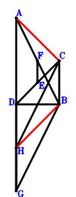
\(\because \) E is the midpoint of DC \(\therefore \small\overrightarrow{BE}=\dfrac{\small\overrightarrow{BC}}{2} + \dfrac{\small\overrightarrow{BD}}{2}\).\(\because \) F is the midpoint of AB \(\therefore \small\overrightarrow{BF}=\dfrac{\small\overrightarrow{BA}}{2}\).\(\because \) D is the midpoint of AG \(\therefore \small\overrightarrow{BG}=- \small\overrightarrow{BA} + 2 \small\overrightarrow{BD}\).\(\because \) CHGB is a parallelogram \(\therefore \small\overrightarrow{BH}=- \small\overrightarrow{BA} + \small\overrightarrow{BC} + 2 \small\overrightarrow{BD}\).\(\because \) DB=2FE \( \therefore\small\overrightarrow{DB}^{2} - 4 \small\overrightarrow{EF}^{2}=\small\overrightarrow{BD}^{2} - 4 \left(- \small\overrightarrow{BE} + \small\overrightarrow{BF}\right)^{2}=\small\overrightarrow{BD}^{2} - 4 \left(\dfrac{\small\overrightarrow{BA}}{2} - \dfrac{\small\overrightarrow{BC}}{2} - \dfrac{\small\overrightarrow{BD}}{2}\right)^{2}=- \small\overrightarrow{BA}^{2} + 2 \small\overrightarrow{BA} \cdot \small\overrightarrow{BC} + 2 \small\overrightarrow{BA} \cdot \small\overrightarrow{BD} - \small\overrightarrow{BC}^{2} - 2 \small\overrightarrow{BC} \cdot \small\overrightarrow{BD}=0.\)In conclusion, \(\small\overrightarrow{CA} \cdot \small\overrightarrow{HB}=- \small\overrightarrow{BH} \cdot \left(\small\overrightarrow{BA} - \small\overrightarrow{BC}\right)=- \left(\small\overrightarrow{BA} - \small\overrightarrow{BC}\right) \cdot \left(- \small\overrightarrow{BA} + \small\overrightarrow{BC} + 2 \small\overrightarrow{BD}\right)=\small\overrightarrow{BA}^{2} - 2 \small\overrightarrow{BA} \cdot \small\overrightarrow{BC} - 2 \small\overrightarrow{BA} \cdot \small\overrightarrow{BD} + \small\overrightarrow{BC}^{2} + 2 \small\overrightarrow{BC} \cdot \small\overrightarrow{BD}=0\), that is, AC⊥HB.
Exercise 549： Let B, E, F, D be the midpoints of HC, CD, BA, AG, respectively. BD=2FE. Prove that HG⊥CA.
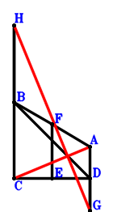
\(\because \) E is the midpoint of CD \(\therefore \small\overrightarrow{DE}=\dfrac{\small\overrightarrow{DC}}{2}\).\(\because \) F is the midpoint of BA \(\therefore \small\overrightarrow{DF}=\dfrac{\small\overrightarrow{DA}}{2} + \dfrac{\small\overrightarrow{DB}}{2}\).\(\because \) D is the midpoint of AG \(\therefore \small\overrightarrow{DG}=- \small\overrightarrow{DA}\).\(\because \) B is the midpoint of HC \(\therefore \small\overrightarrow{DH}=2 \small\overrightarrow{DB} - \small\overrightarrow{DC}\).\(\because \) BD=2FE \( \therefore\small\overrightarrow{DB}^{2} - 4 \small\overrightarrow{EF}^{2}=\small\overrightarrow{DB}^{2} - 4 \left(- \small\overrightarrow{DE} + \small\overrightarrow{DF}\right)^{2}=\small\overrightarrow{DB}^{2} - 4 \left(\dfrac{\small\overrightarrow{DA}}{2} + \dfrac{\small\overrightarrow{DB}}{2} - \dfrac{\small\overrightarrow{DC}}{2}\right)^{2}=- \small\overrightarrow{DA}^{2} - 2 \small\overrightarrow{DA} \cdot \small\overrightarrow{DB} + 2 \small\overrightarrow{DA} \cdot \small\overrightarrow{DC} + 2 \small\overrightarrow{DB} \cdot \small\overrightarrow{DC} - \small\overrightarrow{DC}^{2}=0.\)In conclusion, \(\small\overrightarrow{CA} \cdot \small\overrightarrow{GH}=\left(\small\overrightarrow{DA} - \small\overrightarrow{DC}\right) \cdot \left(- \small\overrightarrow{DG} + \small\overrightarrow{DH}\right)=\left(\small\overrightarrow{DA} - \small\overrightarrow{DC}\right) \cdot \left(\small\overrightarrow{DA} + 2 \small\overrightarrow{DB} - \small\overrightarrow{DC}\right)=\small\overrightarrow{DA}^{2} + 2 \small\overrightarrow{DA} \cdot \small\overrightarrow{DB} - 2 \small\overrightarrow{DA} \cdot \small\overrightarrow{DC} - 2 \small\overrightarrow{DB} \cdot \small\overrightarrow{DC} + \small\overrightarrow{DC}^{2}=0\), that is, HG⊥CA.
Exercise 555： Let ACGD be a trapezoid with CA//GD and CA=2GD. F, E are the midpoints of BA, CD, respectively. BD=2FE. Prove that CA⊥BG.
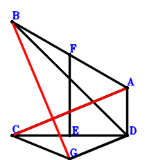
\(\because \) E is the midpoint of CD \(\therefore \small\overrightarrow{DE}=\dfrac{\small\overrightarrow{DC}}{2}\).\(\because \) F is the midpoint of BA \(\therefore \small\overrightarrow{DF}=\dfrac{\small\overrightarrow{DA}}{2} + \dfrac{\small\overrightarrow{DB}}{2}\).\(\because \) CA//GD and CA=2GD \(\therefore \small\overrightarrow{DG}=- \dfrac{\small\overrightarrow{DA}}{2} + \dfrac{\small\overrightarrow{DC}}{2}\).\(\because \) BD=2FE \( \therefore\small\overrightarrow{DB}^{2} - 4 \small\overrightarrow{EF}^{2}=\small\overrightarrow{DB}^{2} - 4 \left(- \small\overrightarrow{DE} + \small\overrightarrow{DF}\right)^{2}=\small\overrightarrow{DB}^{2} - 4 \left(\dfrac{\small\overrightarrow{DA}}{2} + \dfrac{\small\overrightarrow{DB}}{2} - \dfrac{\small\overrightarrow{DC}}{2}\right)^{2}=- \small\overrightarrow{DA}^{2} - 2 \small\overrightarrow{DA} \cdot \small\overrightarrow{DB} + 2 \small\overrightarrow{DA} \cdot \small\overrightarrow{DC} + 2 \small\overrightarrow{DB} \cdot \small\overrightarrow{DC} - \small\overrightarrow{DC}^{2}=0.\)In conclusion, \(\small\overrightarrow{CA} \cdot \small\overrightarrow{GB}=\left(\small\overrightarrow{DA} - \small\overrightarrow{DC}\right) \cdot \left(\small\overrightarrow{DB} - \small\overrightarrow{DG}\right)=\left(\small\overrightarrow{DA} - \small\overrightarrow{DC}\right) \cdot \left(\dfrac{\small\overrightarrow{DA}}{2} + \small\overrightarrow{DB} - \dfrac{\small\overrightarrow{DC}}{2}\right)=\dfrac{\small\overrightarrow{DA}^{2}}{2} + \small\overrightarrow{DA} \cdot \small\overrightarrow{DB} - \small\overrightarrow{DA} \cdot \small\overrightarrow{DC} - \small\overrightarrow{DB} \cdot \small\overrightarrow{DC} + \dfrac{\small\overrightarrow{DC}^{2}}{2}=0\), that is, CA⊥BG.
Exercise 559： Let CGDB be a trapezoid with CB//GD and CB=2GD. E, F, G are the midpoints of DC, AB, HB, respectively. DB=2FE. Prove that HA⊥AC.
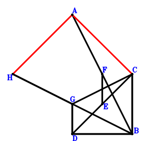
\(\because \) E is the midpoint of DC \(\therefore \small\overrightarrow{BE}=\dfrac{\small\overrightarrow{BC}}{2} + \dfrac{\small\overrightarrow{BD}}{2}\).\(\because \) F is the midpoint of AB \(\therefore \small\overrightarrow{BF}=\dfrac{\small\overrightarrow{BA}}{2}\).\(\because \) CB//GD and CB=2GD \(\therefore \small\overrightarrow{BG}=\dfrac{\small\overrightarrow{BC}}{2} + \small\overrightarrow{BD}\).\(\because \) G is the midpoint of HB \(\therefore \small\overrightarrow{BH}=2 \small\overrightarrow{BG}=\small\overrightarrow{BC} + 2 \small\overrightarrow{BD}\).\(\because \) DB=2FE \( \therefore\small\overrightarrow{DB}^{2} - 4 \small\overrightarrow{EF}^{2}=\small\overrightarrow{BD}^{2} - 4 \left(- \small\overrightarrow{BE} + \small\overrightarrow{BF}\right)^{2}=\small\overrightarrow{BD}^{2} - 4 \left(\dfrac{\small\overrightarrow{BA}}{2} - \dfrac{\small\overrightarrow{BC}}{2} - \dfrac{\small\overrightarrow{BD}}{2}\right)^{2}=- \small\overrightarrow{BA}^{2} + 2 \small\overrightarrow{BA} \cdot \small\overrightarrow{BC} + 2 \small\overrightarrow{BA} \cdot \small\overrightarrow{BD} - \small\overrightarrow{BC}^{2} - 2 \small\overrightarrow{BC} \cdot \small\overrightarrow{BD}=0.\)In conclusion, \(\small\overrightarrow{CA} \cdot \small\overrightarrow{HA}=\left(\small\overrightarrow{BA} - \small\overrightarrow{BC}\right) \cdot \left(\small\overrightarrow{BA} - \small\overrightarrow{BH}\right)=\left(\small\overrightarrow{BA} - \small\overrightarrow{BC}\right) \cdot \left(\small\overrightarrow{BA} - \small\overrightarrow{BC} - 2 \small\overrightarrow{BD}\right)=\small\overrightarrow{BA}^{2} - 2 \small\overrightarrow{BA} \cdot \small\overrightarrow{BC} - 2 \small\overrightarrow{BA} \cdot \small\overrightarrow{BD} + \small\overrightarrow{BC}^{2} + 2 \small\overrightarrow{BC} \cdot \small\overrightarrow{BD}=0\), that is, HA⊥AC.
Exercise 563： Let F be the midpoint of BA. E is the midpoint of BG and CD. H is the midpoint of GD and BI. BD=2FE. Prove that CA⊥AI.
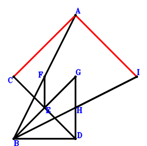
\(\because \) E is the midpoint of CD \(\therefore \small\overrightarrow{DE}=\dfrac{\small\overrightarrow{DC}}{2}\).\(\because \) F is the midpoint of BA \(\therefore \small\overrightarrow{DF}=\dfrac{\small\overrightarrow{DA}}{2} + \dfrac{\small\overrightarrow{DB}}{2}\).\(\because \) E is the midpoint of BG \(\therefore \small\overrightarrow{DG}=- \small\overrightarrow{DB} + 2 \small\overrightarrow{DE}=- \small\overrightarrow{DB} + \small\overrightarrow{DC}\).\(\because \) H is the midpoint of GD \(\therefore \small\overrightarrow{DH}=\dfrac{\small\overrightarrow{DG}}{2}=- \dfrac{\small\overrightarrow{DB}}{2} + \dfrac{\small\overrightarrow{DC}}{2}\).\(\because \) H is the midpoint of BI \(\therefore \small\overrightarrow{DI}=- \small\overrightarrow{DB} + 2 \small\overrightarrow{DH}=- 2 \small\overrightarrow{DB} + \small\overrightarrow{DC}\).\(\because \) BD=2FE \( \therefore\small\overrightarrow{DB}^{2} - 4 \small\overrightarrow{EF}^{2}=\small\overrightarrow{DB}^{2} - 4 \left(- \small\overrightarrow{DE} + \small\overrightarrow{DF}\right)^{2}=\small\overrightarrow{DB}^{2} - 4 \left(\dfrac{\small\overrightarrow{DA}}{2} + \dfrac{\small\overrightarrow{DB}}{2} - \dfrac{\small\overrightarrow{DC}}{2}\right)^{2}=- \small\overrightarrow{DA}^{2} - 2 \small\overrightarrow{DA} \cdot \small\overrightarrow{DB} + 2 \small\overrightarrow{DA} \cdot \small\overrightarrow{DC} + 2 \small\overrightarrow{DB} \cdot \small\overrightarrow{DC} - \small\overrightarrow{DC}^{2}=0.\)In conclusion, \(\small\overrightarrow{CA} \cdot \small\overrightarrow{IA}=\left(\small\overrightarrow{DA} - \small\overrightarrow{DC}\right) \cdot \left(\small\overrightarrow{DA} - \small\overrightarrow{DI}\right)=\left(\small\overrightarrow{DA} - \small\overrightarrow{DC}\right) \cdot \left(\small\overrightarrow{DA} + 2 \small\overrightarrow{DB} - \small\overrightarrow{DC}\right)=\small\overrightarrow{DA}^{2} + 2 \small\overrightarrow{DA} \cdot \small\overrightarrow{DB} - 2 \small\overrightarrow{DA} \cdot \small\overrightarrow{DC} - 2 \small\overrightarrow{DB} \cdot \small\overrightarrow{DC} + \small\overrightarrow{DC}^{2}=0\), that is, CA⊥AI.
Exercise 575： Let GDBE be a trapezoid with DB//GE and DB=2GE. F, E, G are the midpoints of AB, CD, HB, respectively. DB=2FE. Prove that HA⊥AC.
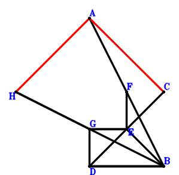
\(\because \) E is the midpoint of CD \(\therefore \small\overrightarrow{DE}=\dfrac{\small\overrightarrow{DC}}{2}\).\(\because \) F is the midpoint of AB \(\therefore \small\overrightarrow{DF}=\dfrac{\small\overrightarrow{DA}}{2} + \dfrac{\small\overrightarrow{DB}}{2}\).\(\because \) DB//GE and DB=2GE \(\therefore \small\overrightarrow{DG}=- \dfrac{\small\overrightarrow{DB}}{2} + \dfrac{\small\overrightarrow{DC}}{2}\).\(\because \) G is the midpoint of HB \(\therefore \small\overrightarrow{DH}=- \small\overrightarrow{DB} + 2 \small\overrightarrow{DG}=- 2 \small\overrightarrow{DB} + \small\overrightarrow{DC}\).\(\because \) DB=2FE \( \therefore\small\overrightarrow{DB}^{2} - 4 \small\overrightarrow{EF}^{2}=\small\overrightarrow{DB}^{2} - 4 \left(- \small\overrightarrow{DE} + \small\overrightarrow{DF}\right)^{2}=\small\overrightarrow{DB}^{2} - 4 \left(\dfrac{\small\overrightarrow{DA}}{2} + \dfrac{\small\overrightarrow{DB}}{2} - \dfrac{\small\overrightarrow{DC}}{2}\right)^{2}=- \small\overrightarrow{DA}^{2} - 2 \small\overrightarrow{DA} \cdot \small\overrightarrow{DB} + 2 \small\overrightarrow{DA} \cdot \small\overrightarrow{DC} + 2 \small\overrightarrow{DB} \cdot \small\overrightarrow{DC} - \small\overrightarrow{DC}^{2}=0.\)In conclusion, \(\small\overrightarrow{CA} \cdot \small\overrightarrow{HA}=\left(\small\overrightarrow{DA} - \small\overrightarrow{DC}\right) \cdot \left(\small\overrightarrow{DA} - \small\overrightarrow{DH}\right)=\left(\small\overrightarrow{DA} - \small\overrightarrow{DC}\right) \cdot \left(\small\overrightarrow{DA} + 2 \small\overrightarrow{DB} - \small\overrightarrow{DC}\right)=\small\overrightarrow{DA}^{2} + 2 \small\overrightarrow{DA} \cdot \small\overrightarrow{DB} - 2 \small\overrightarrow{DA} \cdot \small\overrightarrow{DC} - 2 \small\overrightarrow{DB} \cdot \small\overrightarrow{DC} + \small\overrightarrow{DC}^{2}=0\), that is, HA⊥AC.
Exercise 582： Let HBDG and GBDA be parallelograms. E, F are the midpoints of CD, BA, respectively. BD=2FE. Prove that HC⊥CA.
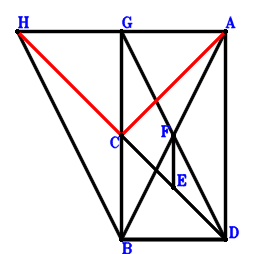
\(\because \) E is the midpoint of CD \(\therefore \small\overrightarrow{DE}=\dfrac{\small\overrightarrow{DC}}{2}\).\(\because \) F is the midpoint of BA \(\therefore \small\overrightarrow{DF}=\dfrac{\small\overrightarrow{DA}}{2} + \dfrac{\small\overrightarrow{DB}}{2}\).\(\because \) GBDA is a parallelogram \(\therefore \small\overrightarrow{DG}=\small\overrightarrow{DA} + \small\overrightarrow{DB}\).\(\because \) HBDG is a parallelogram \(\therefore \small\overrightarrow{DH}=\small\overrightarrow{DA} + 2 \small\overrightarrow{DB}\).\(\because \) BD=2FE \( \therefore\small\overrightarrow{DB}^{2} - 4 \small\overrightarrow{EF}^{2}=\small\overrightarrow{DB}^{2} - 4 \left(- \small\overrightarrow{DE} + \small\overrightarrow{DF}\right)^{2}=\small\overrightarrow{DB}^{2} - 4 \left(\dfrac{\small\overrightarrow{DA}}{2} + \dfrac{\small\overrightarrow{DB}}{2} - \dfrac{\small\overrightarrow{DC}}{2}\right)^{2}=- \small\overrightarrow{DA}^{2} - 2 \small\overrightarrow{DA} \cdot \small\overrightarrow{DB} + 2 \small\overrightarrow{DA} \cdot \small\overrightarrow{DC} + 2 \small\overrightarrow{DB} \cdot \small\overrightarrow{DC} - \small\overrightarrow{DC}^{2}=0.\)In conclusion, \(\small\overrightarrow{CA} \cdot \small\overrightarrow{CH}=\left(\small\overrightarrow{DA} - \small\overrightarrow{DC}\right) \cdot \left(- \small\overrightarrow{DC} + \small\overrightarrow{DH}\right)=\left(\small\overrightarrow{DA} - \small\overrightarrow{DC}\right) \cdot \left(\small\overrightarrow{DA} + 2 \small\overrightarrow{DB} - \small\overrightarrow{DC}\right)=\small\overrightarrow{DA}^{2} + 2 \small\overrightarrow{DA} \cdot \small\overrightarrow{DB} - 2 \small\overrightarrow{DA} \cdot \small\overrightarrow{DC} - 2 \small\overrightarrow{DB} \cdot \small\overrightarrow{DC} + \small\overrightarrow{DC}^{2}=0\), that is, HC⊥CA.
Exercise 584： Let HBDG be a parallelogram. E is the midpoint of CD. F is the midpoint of BA and GD. BD=2FE. Prove that HC⊥CA.
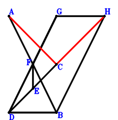
\(\because \) E is the midpoint of CD \(\therefore \small\overrightarrow{DE}=\dfrac{\small\overrightarrow{DC}}{2}\).\(\because \) F is the midpoint of BA \(\therefore \small\overrightarrow{DF}=\dfrac{\small\overrightarrow{DA}}{2} + \dfrac{\small\overrightarrow{DB}}{2}\).\(\because \) F is the midpoint of GD \(\therefore \small\overrightarrow{DG}=2 \small\overrightarrow{DF}=\small\overrightarrow{DA} + \small\overrightarrow{DB}\).\(\because \) HBDG is a parallelogram \(\therefore \small\overrightarrow{DH}=\small\overrightarrow{DA} + 2 \small\overrightarrow{DB}\).\(\because \) BD=2FE \( \therefore\small\overrightarrow{DB}^{2} - 4 \small\overrightarrow{EF}^{2}=\small\overrightarrow{DB}^{2} - 4 \left(- \small\overrightarrow{DE} + \small\overrightarrow{DF}\right)^{2}=\small\overrightarrow{DB}^{2} - 4 \left(\dfrac{\small\overrightarrow{DA}}{2} + \dfrac{\small\overrightarrow{DB}}{2} - \dfrac{\small\overrightarrow{DC}}{2}\right)^{2}=- \small\overrightarrow{DA}^{2} - 2 \small\overrightarrow{DA} \cdot \small\overrightarrow{DB} + 2 \small\overrightarrow{DA} \cdot \small\overrightarrow{DC} + 2 \small\overrightarrow{DB} \cdot \small\overrightarrow{DC} - \small\overrightarrow{DC}^{2}=0.\)In conclusion, \(\small\overrightarrow{CA} \cdot \small\overrightarrow{CH}=\left(\small\overrightarrow{DA} - \small\overrightarrow{DC}\right) \cdot \left(- \small\overrightarrow{DC} + \small\overrightarrow{DH}\right)=\left(\small\overrightarrow{DA} - \small\overrightarrow{DC}\right) \cdot \left(\small\overrightarrow{DA} + 2 \small\overrightarrow{DB} - \small\overrightarrow{DC}\right)=\small\overrightarrow{DA}^{2} + 2 \small\overrightarrow{DA} \cdot \small\overrightarrow{DB} - 2 \small\overrightarrow{DA} \cdot \small\overrightarrow{DC} - 2 \small\overrightarrow{DB} \cdot \small\overrightarrow{DC} + \small\overrightarrow{DC}^{2}=0\), that is, HC⊥CA.
Exercise 585： Let BEGD be a trapezoid with DG//BE and DG=2BE. F, E are the midpoints of BA, CD, respectively. BD=2FE. Prove that CA⊥AG.
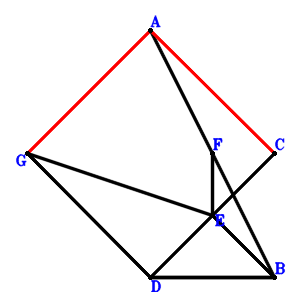
\(\because \) E is the midpoint of CD \(\therefore \small\overrightarrow{DE}=\dfrac{\small\overrightarrow{DC}}{2}\).\(\because \) F is the midpoint of BA \(\therefore \small\overrightarrow{DF}=\dfrac{\small\overrightarrow{DA}}{2} + \dfrac{\small\overrightarrow{DB}}{2}\).\(\because \) DG//BE and DG=2BE \(\therefore \small\overrightarrow{DG}=- 2 \small\overrightarrow{DB} + 2 \small\overrightarrow{DE}=- 2 \small\overrightarrow{DB} + \small\overrightarrow{DC}\).\(\because \) BD=2FE \( \therefore\small\overrightarrow{DB}^{2} - 4 \small\overrightarrow{EF}^{2}=\small\overrightarrow{DB}^{2} - 4 \left(- \small\overrightarrow{DE} + \small\overrightarrow{DF}\right)^{2}=\small\overrightarrow{DB}^{2} - 4 \left(\dfrac{\small\overrightarrow{DA}}{2} + \dfrac{\small\overrightarrow{DB}}{2} - \dfrac{\small\overrightarrow{DC}}{2}\right)^{2}=- \small\overrightarrow{DA}^{2} - 2 \small\overrightarrow{DA} \cdot \small\overrightarrow{DB} + 2 \small\overrightarrow{DA} \cdot \small\overrightarrow{DC} + 2 \small\overrightarrow{DB} \cdot \small\overrightarrow{DC} - \small\overrightarrow{DC}^{2}=0.\)In conclusion, \(\small\overrightarrow{CA} \cdot \small\overrightarrow{GA}=\left(\small\overrightarrow{DA} - \small\overrightarrow{DC}\right) \cdot \left(\small\overrightarrow{DA} - \small\overrightarrow{DG}\right)=\left(\small\overrightarrow{DA} - \small\overrightarrow{DC}\right) \cdot \left(\small\overrightarrow{DA} + 2 \small\overrightarrow{DB} - \small\overrightarrow{DC}\right)=\small\overrightarrow{DA}^{2} + 2 \small\overrightarrow{DA} \cdot \small\overrightarrow{DB} - 2 \small\overrightarrow{DA} \cdot \small\overrightarrow{DC} - 2 \small\overrightarrow{DB} \cdot \small\overrightarrow{DC} + \small\overrightarrow{DC}^{2}=0\), that is, CA⊥AG.
Exercise 706： Let BFAG and BCED be parallelograms. C is the midpoint of FA. CA=AE. Prove that BD⊥DG.
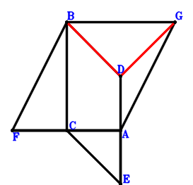
\(\because \) BCED is a parallelogram \(\therefore \small\overrightarrow{AE}=- \small\overrightarrow{AB} + \small\overrightarrow{AC} + \small\overrightarrow{AD}\).\(\because \) C is the midpoint of FA \(\therefore \small\overrightarrow{AF}=2 \small\overrightarrow{AC}\).\(\because \) BFAG is a parallelogram \(\therefore \small\overrightarrow{AG}=\small\overrightarrow{AB} - \small\overrightarrow{AF}=\small\overrightarrow{AB} - 2 \small\overrightarrow{AC}\).\(\because \) CA=AE \( \therefore\small\overrightarrow{AC}^{2} - \small\overrightarrow{AE}^{2}=\small\overrightarrow{AC}^{2} - \left(- \small\overrightarrow{AB} + \small\overrightarrow{AC} + \small\overrightarrow{AD}\right)^{2}=- \small\overrightarrow{AB}^{2} + 2 \small\overrightarrow{AB} \cdot \small\overrightarrow{AC} + 2 \small\overrightarrow{AB} \cdot \small\overrightarrow{AD} - 2 \small\overrightarrow{AC} \cdot \small\overrightarrow{AD} - \small\overrightarrow{AD}^{2}=0.\)In conclusion, \(\small\overrightarrow{DB} \cdot \small\overrightarrow{DG}=\left(\small\overrightarrow{AB} - \small\overrightarrow{AD}\right) \cdot \left(- \small\overrightarrow{AD} + \small\overrightarrow{AG}\right)=\left(\small\overrightarrow{AB} - \small\overrightarrow{AD}\right) \cdot \left(\small\overrightarrow{AB} - 2 \small\overrightarrow{AC} - \small\overrightarrow{AD}\right)=\small\overrightarrow{AB}^{2} - 2 \small\overrightarrow{AB} \cdot \small\overrightarrow{AC} - 2 \small\overrightarrow{AB} \cdot \small\overrightarrow{AD} + 2 \small\overrightarrow{AC} \cdot \small\overrightarrow{AD} + \small\overrightarrow{AD}^{2}=0\), that is, BD⊥DG.
Exercise 710： Let ECAD be a parallelogram. DFCA is a trapezoid with DA//FC and DA=2FC. G is the midpoint of BA. CA=BE. Prove that BD⊥FG.
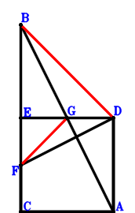
\(\because \) ECAD is a parallelogram \(\therefore \small\overrightarrow{AE}=\small\overrightarrow{AC} + \small\overrightarrow{AD}\).\(\because \) DA//FC and DA=2FC \(\therefore \small\overrightarrow{AF}=\small\overrightarrow{AC} + \dfrac{\small\overrightarrow{AD}}{2}\).\(\because \) G is the midpoint of BA \(\therefore \small\overrightarrow{AG}=\dfrac{\small\overrightarrow{AB}}{2}\).\(\because \) CA=BE \( \therefore\small\overrightarrow{CA}^{2} - \small\overrightarrow{EB}^{2}=\small\overrightarrow{AC}^{2} - \left(\small\overrightarrow{AB} - \small\overrightarrow{AE}\right)^{2}=\small\overrightarrow{AC}^{2} - \left(\small\overrightarrow{AB} - \small\overrightarrow{AC} - \small\overrightarrow{AD}\right)^{2}=- \small\overrightarrow{AB}^{2} + 2 \small\overrightarrow{AB} \cdot \small\overrightarrow{AC} + 2 \small\overrightarrow{AB} \cdot \small\overrightarrow{AD} - 2 \small\overrightarrow{AC} \cdot \small\overrightarrow{AD} - \small\overrightarrow{AD}^{2}=0.\)In conclusion, \(\small\overrightarrow{DB} \cdot \small\overrightarrow{FG}=\left(\small\overrightarrow{AB} - \small\overrightarrow{AD}\right) \cdot \left(- \small\overrightarrow{AF} + \small\overrightarrow{AG}\right)=\left(\small\overrightarrow{AB} - \small\overrightarrow{AD}\right) \cdot \left(\dfrac{\small\overrightarrow{AB}}{2} - \small\overrightarrow{AC} - \dfrac{\small\overrightarrow{AD}}{2}\right)=\dfrac{\small\overrightarrow{AB}^{2}}{2} - \small\overrightarrow{AB} \cdot \small\overrightarrow{AC} - \small\overrightarrow{AB} \cdot \small\overrightarrow{AD} + \small\overrightarrow{AC} \cdot \small\overrightarrow{AD} + \dfrac{\small\overrightarrow{AD}^{2}}{2}=0\), that is, BD⊥FG.
Exercise 756： Let CGFA, BCFD and ECAD be parallelograms. CA=BE. Prove that GA⊥BD.
Exercise 1069： Let GACB be a parallelogram. E, F are the midpoints of DC, AB, respectively. H is the midpoint of GA and ID. AC=2FE. Prove that IC⊥DB.
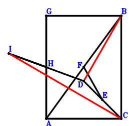
\(\because \) E is the midpoint of DC \(\therefore \small\overrightarrow{CE}=\dfrac{\small\overrightarrow{CD}}{2}\).\(\because \) F is the midpoint of AB \(\therefore \small\overrightarrow{CF}=\dfrac{\small\overrightarrow{CA}}{2} + \dfrac{\small\overrightarrow{CB}}{2}\).\(\because \) GACB is a parallelogram \(\therefore \small\overrightarrow{CG}=\small\overrightarrow{CA} + \small\overrightarrow{CB}\).\(\because \) H is the midpoint of GA \(\therefore \small\overrightarrow{CH}=\dfrac{\small\overrightarrow{CA}}{2} + \dfrac{\small\overrightarrow{CG}}{2}=\small\overrightarrow{CA} + \dfrac{\small\overrightarrow{CB}}{2}\).\(\because \) H is the midpoint of ID \(\therefore \small\overrightarrow{CI}=- \small\overrightarrow{CD} + 2 \small\overrightarrow{CH}=2 \small\overrightarrow{CA} + \small\overrightarrow{CB} - \small\overrightarrow{CD}\).\(\because \) AC=2FE \( \therefore\small\overrightarrow{CA}^{2} - 4 \small\overrightarrow{EF}^{2}=\small\overrightarrow{CA}^{2} - 4 \left(- \small\overrightarrow{CE} + \small\overrightarrow{CF}\right)^{2}=\small\overrightarrow{CA}^{2} - 4 \left(\dfrac{\small\overrightarrow{CA}}{2} + \dfrac{\small\overrightarrow{CB}}{2} - \dfrac{\small\overrightarrow{CD}}{2}\right)^{2}=- 2 \small\overrightarrow{CA} \cdot \small\overrightarrow{CB} + 2 \small\overrightarrow{CA} \cdot \small\overrightarrow{CD} - \small\overrightarrow{CB}^{2} + 2 \small\overrightarrow{CB} \cdot \small\overrightarrow{CD} - \small\overrightarrow{CD}^{2}=0.\)In conclusion, \(\small\overrightarrow{CI} \cdot \small\overrightarrow{DB}=\small\overrightarrow{CI} \cdot \left(\small\overrightarrow{CB} - \small\overrightarrow{CD}\right)=\left(\small\overrightarrow{CB} - \small\overrightarrow{CD}\right) \cdot \left(2 \small\overrightarrow{CA} + \small\overrightarrow{CB} - \small\overrightarrow{CD}\right)=2 \small\overrightarrow{CA} \cdot \small\overrightarrow{CB} - 2 \small\overrightarrow{CA} \cdot \small\overrightarrow{CD} + \small\overrightarrow{CB}^{2} - 2 \small\overrightarrow{CB} \cdot \small\overrightarrow{CD} + \small\overrightarrow{CD}^{2}=0\), that is, IC⊥DB.
Exercise 1109： Let GACB and GDHC be parallelograms. E, F are the midpoints of DC, AB, respectively. AC=2FE. Prove that AH⊥DB.
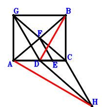
\(\because \) E is the midpoint of DC \(\therefore \small\overrightarrow{CE}=\dfrac{\small\overrightarrow{CD}}{2}\).\(\because \) F is the midpoint of AB \(\therefore \small\overrightarrow{CF}=\dfrac{\small\overrightarrow{CA}}{2} + \dfrac{\small\overrightarrow{CB}}{2}\).\(\because \) GACB is a parallelogram \(\therefore \small\overrightarrow{CG}=\small\overrightarrow{CA} + \small\overrightarrow{CB}\).\(\because \) GDHC is a parallelogram \(\therefore \small\overrightarrow{CH}=\small\overrightarrow{CD} - \small\overrightarrow{CG}=- \small\overrightarrow{CA} - \small\overrightarrow{CB} + \small\overrightarrow{CD}\).\(\because \) AC=2FE \( \therefore\small\overrightarrow{CA}^{2} - 4 \small\overrightarrow{EF}^{2}=\small\overrightarrow{CA}^{2} - 4 \left(- \small\overrightarrow{CE} + \small\overrightarrow{CF}\right)^{2}=\small\overrightarrow{CA}^{2} - 4 \left(\dfrac{\small\overrightarrow{CA}}{2} + \dfrac{\small\overrightarrow{CB}}{2} - \dfrac{\small\overrightarrow{CD}}{2}\right)^{2}=- 2 \small\overrightarrow{CA} \cdot \small\overrightarrow{CB} + 2 \small\overrightarrow{CA} \cdot \small\overrightarrow{CD} - \small\overrightarrow{CB}^{2} + 2 \small\overrightarrow{CB} \cdot \small\overrightarrow{CD} - \small\overrightarrow{CD}^{2}=0.\)In conclusion, \(\small\overrightarrow{DB} \cdot \small\overrightarrow{HA}=\left(\small\overrightarrow{CA} - \small\overrightarrow{CH}\right) \cdot \left(\small\overrightarrow{CB} - \small\overrightarrow{CD}\right)=\left(\small\overrightarrow{CB} - \small\overrightarrow{CD}\right) \cdot \left(2 \small\overrightarrow{CA} + \small\overrightarrow{CB} - \small\overrightarrow{CD}\right)=2 \small\overrightarrow{CA} \cdot \small\overrightarrow{CB} - 2 \small\overrightarrow{CA} \cdot \small\overrightarrow{CD} + \small\overrightarrow{CB}^{2} - 2 \small\overrightarrow{CB} \cdot \small\overrightarrow{CD} + \small\overrightarrow{CD}^{2}=0\), that is, AH⊥DB.
Exercise 1131： Let GBCA be a trapezoid with BC//GA and BC=2GA. F, E are the midpoints of BA, DC, respectively. AC=2FE. Prove that BD⊥GE.
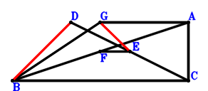
\(\because \) E is the midpoint of DC \(\therefore \small\overrightarrow{CE}=\dfrac{\small\overrightarrow{CD}}{2}\).\(\because \) F is the midpoint of BA \(\therefore \small\overrightarrow{CF}=\dfrac{\small\overrightarrow{CA}}{2} + \dfrac{\small\overrightarrow{CB}}{2}\).\(\because \) BC//GA and BC=2GA \(\therefore \small\overrightarrow{CG}=\small\overrightarrow{CA} + \dfrac{\small\overrightarrow{CB}}{2}\).\(\because \) AC=2FE \( \therefore\small\overrightarrow{CA}^{2} - 4 \small\overrightarrow{EF}^{2}=\small\overrightarrow{CA}^{2} - 4 \left(- \small\overrightarrow{CE} + \small\overrightarrow{CF}\right)^{2}=\small\overrightarrow{CA}^{2} - 4 \left(\dfrac{\small\overrightarrow{CA}}{2} + \dfrac{\small\overrightarrow{CB}}{2} - \dfrac{\small\overrightarrow{CD}}{2}\right)^{2}=- 2 \small\overrightarrow{CA} \cdot \small\overrightarrow{CB} + 2 \small\overrightarrow{CA} \cdot \small\overrightarrow{CD} - \small\overrightarrow{CB}^{2} + 2 \small\overrightarrow{CB} \cdot \small\overrightarrow{CD} - \small\overrightarrow{CD}^{2}=0.\)In conclusion, \(\small\overrightarrow{DB} \cdot \small\overrightarrow{EG}=\left(\small\overrightarrow{CB} - \small\overrightarrow{CD}\right) \cdot \left(- \small\overrightarrow{CE} + \small\overrightarrow{CG}\right)=\left(\small\overrightarrow{CB} - \small\overrightarrow{CD}\right) \cdot \left(\small\overrightarrow{CA} + \dfrac{\small\overrightarrow{CB}}{2} - \dfrac{\small\overrightarrow{CD}}{2}\right)=\small\overrightarrow{CA} \cdot \small\overrightarrow{CB} - \small\overrightarrow{CA} \cdot \small\overrightarrow{CD} + \dfrac{\small\overrightarrow{CB}^{2}}{2} - \small\overrightarrow{CB} \cdot \small\overrightarrow{CD} + \dfrac{\small\overrightarrow{CD}^{2}}{2}=0\), that is, BD⊥GE.
Exercise 1143： Let GACB be a trapezoid with GB//AC and GB=2AC. F, E are the midpoints of BA, DC, respectively. AC=2EF. Prove that GD⊥DB.
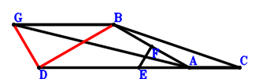
\(\because \) E is the midpoint of DC \(\therefore \small\overrightarrow{CE}=\dfrac{\small\overrightarrow{CD}}{2}\).\(\because \) F is the midpoint of BA \(\therefore \small\overrightarrow{CF}=\dfrac{\small\overrightarrow{CA}}{2} + \dfrac{\small\overrightarrow{CB}}{2}\).\(\because \) GB//AC and GB=2AC \(\therefore \small\overrightarrow{CG}=2 \small\overrightarrow{CA} + \small\overrightarrow{CB}\).\(\because \) AC=2EF \( \therefore\small\overrightarrow{CA}^{2} - 4 \small\overrightarrow{EF}^{2}=\small\overrightarrow{CA}^{2} - 4 \left(- \small\overrightarrow{CE} + \small\overrightarrow{CF}\right)^{2}=\small\overrightarrow{CA}^{2} - 4 \left(\dfrac{\small\overrightarrow{CA}}{2} + \dfrac{\small\overrightarrow{CB}}{2} - \dfrac{\small\overrightarrow{CD}}{2}\right)^{2}=- 2 \small\overrightarrow{CA} \cdot \small\overrightarrow{CB} + 2 \small\overrightarrow{CA} \cdot \small\overrightarrow{CD} - \small\overrightarrow{CB}^{2} + 2 \small\overrightarrow{CB} \cdot \small\overrightarrow{CD} - \small\overrightarrow{CD}^{2}=0.\)In conclusion, \(\small\overrightarrow{DB} \cdot \small\overrightarrow{DG}=\left(\small\overrightarrow{CB} - \small\overrightarrow{CD}\right) \cdot \left(- \small\overrightarrow{CD} + \small\overrightarrow{CG}\right)=\left(\small\overrightarrow{CB} - \small\overrightarrow{CD}\right) \cdot \left(2 \small\overrightarrow{CA} + \small\overrightarrow{CB} - \small\overrightarrow{CD}\right)=2 \small\overrightarrow{CA} \cdot \small\overrightarrow{CB} - 2 \small\overrightarrow{CA} \cdot \small\overrightarrow{CD} + \small\overrightarrow{CB}^{2} - 2 \small\overrightarrow{CB} \cdot \small\overrightarrow{CD} + \small\overrightarrow{CD}^{2}=0\), that is, GD⊥DB.
Exercise 1153： Let E, F, C be the midpoints of CD, BA, GA, respectively. H is the midpoint of GD and IA. CA=2FE. Prove that IB⊥BD.
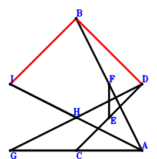
\(\because \) E is the midpoint of CD \(\therefore \small\overrightarrow{AE}=\dfrac{\small\overrightarrow{AC}}{2} + \dfrac{\small\overrightarrow{AD}}{2}\).\(\because \) F is the midpoint of BA \(\therefore \small\overrightarrow{AF}=\dfrac{\small\overrightarrow{AB}}{2}\).\(\because \) C is the midpoint of GA \(\therefore \small\overrightarrow{AG}=2 \small\overrightarrow{AC}\).\(\because \) H is the midpoint of GD \(\therefore \small\overrightarrow{AH}=\dfrac{\small\overrightarrow{AD}}{2} + \dfrac{\small\overrightarrow{AG}}{2}=\small\overrightarrow{AC} + \dfrac{\small\overrightarrow{AD}}{2}\).\(\because \) H is the midpoint of IA \(\therefore \small\overrightarrow{AI}=2 \small\overrightarrow{AH}=2 \small\overrightarrow{AC} + \small\overrightarrow{AD}\).\(\because \) CA=2FE \( \therefore\small\overrightarrow{CA}^{2} - 4 \small\overrightarrow{EF}^{2}=\small\overrightarrow{AC}^{2} - 4 \left(- \small\overrightarrow{AE} + \small\overrightarrow{AF}\right)^{2}=\small\overrightarrow{AC}^{2} - 4 \left(\dfrac{\small\overrightarrow{AB}}{2} - \dfrac{\small\overrightarrow{AC}}{2} - \dfrac{\small\overrightarrow{AD}}{2}\right)^{2}=- \small\overrightarrow{AB}^{2} + 2 \small\overrightarrow{AB} \cdot \small\overrightarrow{AC} + 2 \small\overrightarrow{AB} \cdot \small\overrightarrow{AD} - 2 \small\overrightarrow{AC} \cdot \small\overrightarrow{AD} - \small\overrightarrow{AD}^{2}=0.\)In conclusion, \(\small\overrightarrow{DB} \cdot \small\overrightarrow{IB}=\left(\small\overrightarrow{AB} - \small\overrightarrow{AD}\right) \cdot \left(\small\overrightarrow{AB} - \small\overrightarrow{AI}\right)=\left(\small\overrightarrow{AB} - \small\overrightarrow{AD}\right) \cdot \left(\small\overrightarrow{AB} - 2 \small\overrightarrow{AC} - \small\overrightarrow{AD}\right)=\small\overrightarrow{AB}^{2} - 2 \small\overrightarrow{AB} \cdot \small\overrightarrow{AC} - 2 \small\overrightarrow{AB} \cdot \small\overrightarrow{AD} + 2 \small\overrightarrow{AC} \cdot \small\overrightarrow{AD} + \small\overrightarrow{AD}^{2}=0\), that is, IB⊥BD.
Exercise 1165： Let A, G, B be collinear and GB=2AG. H, G, C are collinear and 2HC=3HG. E, F are the midpoints of DC, AB, respectively. AC=2FE. Prove that HD⊥DB.
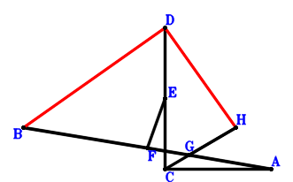
\(\because \) E is the midpoint of DC \(\therefore \small\overrightarrow{CE}=\dfrac{\small\overrightarrow{CD}}{2}\).\(\because \) F is the midpoint of AB \(\therefore \small\overrightarrow{CF}=\dfrac{\small\overrightarrow{CA}}{2} + \dfrac{\small\overrightarrow{CB}}{2}\).\(\because \) A, G, B are collinear and GB=2AG \(\therefore \small\overrightarrow{CG}=\dfrac{2 \small\overrightarrow{CA}}{3} + \dfrac{\small\overrightarrow{CB}}{3}\).\(\because \) H, G, C are collinear and 2HC=3HG \(\therefore \small\overrightarrow{CH}=3 \small\overrightarrow{CG}=2 \small\overrightarrow{CA} + \small\overrightarrow{CB}\).\(\because \) AC=2FE \( \therefore\small\overrightarrow{CA}^{2} - 4 \small\overrightarrow{EF}^{2}=\small\overrightarrow{CA}^{2} - 4 \left(- \small\overrightarrow{CE} + \small\overrightarrow{CF}\right)^{2}=\small\overrightarrow{CA}^{2} - 4 \left(\dfrac{\small\overrightarrow{CA}}{2} + \dfrac{\small\overrightarrow{CB}}{2} - \dfrac{\small\overrightarrow{CD}}{2}\right)^{2}=- 2 \small\overrightarrow{CA} \cdot \small\overrightarrow{CB} + 2 \small\overrightarrow{CA} \cdot \small\overrightarrow{CD} - \small\overrightarrow{CB}^{2} + 2 \small\overrightarrow{CB} \cdot \small\overrightarrow{CD} - \small\overrightarrow{CD}^{2}=0.\)In conclusion, \(\small\overrightarrow{DB} \cdot \small\overrightarrow{DH}=\left(\small\overrightarrow{CB} - \small\overrightarrow{CD}\right) \cdot \left(- \small\overrightarrow{CD} + \small\overrightarrow{CH}\right)=\left(\small\overrightarrow{CB} - \small\overrightarrow{CD}\right) \cdot \left(2 \small\overrightarrow{CA} + \small\overrightarrow{CB} - \small\overrightarrow{CD}\right)=2 \small\overrightarrow{CA} \cdot \small\overrightarrow{CB} - 2 \small\overrightarrow{CA} \cdot \small\overrightarrow{CD} + \small\overrightarrow{CB}^{2} - 2 \small\overrightarrow{CB} \cdot \small\overrightarrow{CD} + \small\overrightarrow{CD}^{2}=0\), that is, HD⊥DB.
Exercise 1172： Let HGAD be a parallelogram. E, F, C are the midpoints of CD, BA, GA, respectively. CA=2FE. Prove that HB⊥BD.
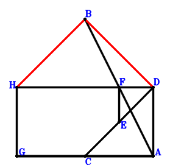
\(\because \) E is the midpoint of CD \(\therefore \small\overrightarrow{AE}=\dfrac{\small\overrightarrow{AC}}{2} + \dfrac{\small\overrightarrow{AD}}{2}\).\(\because \) F is the midpoint of BA \(\therefore \small\overrightarrow{AF}=\dfrac{\small\overrightarrow{AB}}{2}\).\(\because \) C is the midpoint of GA \(\therefore \small\overrightarrow{AG}=2 \small\overrightarrow{AC}\).\(\because \) HGAD is a parallelogram \(\therefore \small\overrightarrow{AH}=2 \small\overrightarrow{AC} + \small\overrightarrow{AD}\).\(\because \) CA=2FE \( \therefore\small\overrightarrow{CA}^{2} - 4 \small\overrightarrow{EF}^{2}=\small\overrightarrow{AC}^{2} - 4 \left(- \small\overrightarrow{AE} + \small\overrightarrow{AF}\right)^{2}=\small\overrightarrow{AC}^{2} - 4 \left(\dfrac{\small\overrightarrow{AB}}{2} - \dfrac{\small\overrightarrow{AC}}{2} - \dfrac{\small\overrightarrow{AD}}{2}\right)^{2}=- \small\overrightarrow{AB}^{2} + 2 \small\overrightarrow{AB} \cdot \small\overrightarrow{AC} + 2 \small\overrightarrow{AB} \cdot \small\overrightarrow{AD} - 2 \small\overrightarrow{AC} \cdot \small\overrightarrow{AD} - \small\overrightarrow{AD}^{2}=0.\)In conclusion, \(\small\overrightarrow{DB} \cdot \small\overrightarrow{HB}=\left(\small\overrightarrow{AB} - \small\overrightarrow{AD}\right) \cdot \left(\small\overrightarrow{AB} - \small\overrightarrow{AH}\right)=\left(\small\overrightarrow{AB} - \small\overrightarrow{AD}\right) \cdot \left(\small\overrightarrow{AB} - 2 \small\overrightarrow{AC} - \small\overrightarrow{AD}\right)=\small\overrightarrow{AB}^{2} - 2 \small\overrightarrow{AB} \cdot \small\overrightarrow{AC} - 2 \small\overrightarrow{AB} \cdot \small\overrightarrow{AD} + 2 \small\overrightarrow{AC} \cdot \small\overrightarrow{AD} + \small\overrightarrow{AD}^{2}=0\), that is, HB⊥BD.